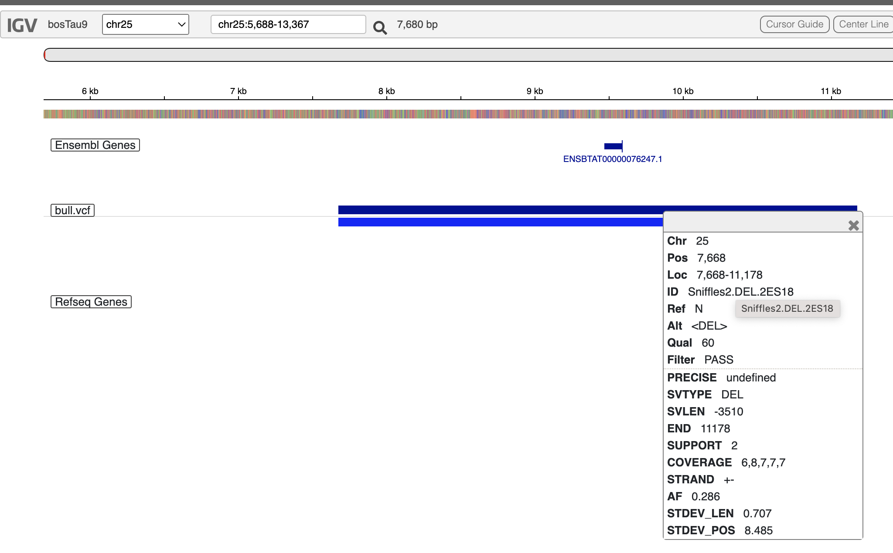

Bio326_2023
Marie Saitou
2023-01-30
Last updated: 2023-03-06
Checks: 7 0
Knit directory: Bio326/
This reproducible R Markdown analysis was created with workflowr (version 1.7.0). The Checks tab describes the reproducibility checks that were applied when the results were created. The Past versions tab lists the development history.
Great! Since the R Markdown file has been committed to the Git repository, you know the exact version of the code that produced these results.
Great job! The global environment was empty. Objects defined in the global environment can affect the analysis in your R Markdown file in unknown ways. For reproduciblity it’s best to always run the code in an empty environment.
The command set.seed(20210128) was run prior to running
the code in the R Markdown file. Setting a seed ensures that any results
that rely on randomness, e.g. subsampling or permutations, are
reproducible.
Great job! Recording the operating system, R version, and package versions is critical for reproducibility.
Nice! There were no cached chunks for this analysis, so you can be confident that you successfully produced the results during this run.
Great job! Using relative paths to the files within your workflowr project makes it easier to run your code on other machines.
Great! You are using Git for version control. Tracking code development and connecting the code version to the results is critical for reproducibility.
The results in this page were generated with repository version 41e8c92. See the Past versions tab to see a history of the changes made to the R Markdown and HTML files.
Note that you need to be careful to ensure that all relevant files for
the analysis have been committed to Git prior to generating the results
(you can use wflow_publish or
wflow_git_commit). workflowr only checks the R Markdown
file, but you know if there are other scripts or data files that it
depends on. Below is the status of the Git repository when the results
were generated:
Ignored files:
Ignored: .DS_Store
Ignored: .Rhistory
Note that any generated files, e.g. HTML, png, CSS, etc., are not included in this status report because it is ok for generated content to have uncommitted changes.
These are the previous versions of the repository in which changes were
made to the R Markdown (analysis/Bio326_2023.Rmd) and HTML
(docs/Bio326_2023.html) files. If you’ve configured a
remote Git repository (see ?wflow_git_remote), click on the
hyperlinks in the table below to view the files as they were in that
past version.
| File | Version | Author | Date | Message |
|---|---|---|---|---|
| Rmd | 41e8c92 | mariesaitou | 2023-03-06 | wflow_publish(c("analysis/Bio326_2023.Rmd")) |
| html | ef86291 | mariesaitou | 2023-03-03 | Build site. |
| Rmd | 4082f83 | mariesaitou | 2023-03-03 | wflow_publish(c("analysis/Bio326_2023.Rmd")) |
| html | b563dcb | mariesaitou | 2023-03-03 | Build site. |
| Rmd | 65211fd | mariesaitou | 2023-03-03 | image data set |
| html | 10c4a0a | mariesaitou | 2023-03-02 | Build site. |
| html | eb2f5bd | mariesaitou | 2023-03-02 | Build site. |
| html | 748a76d | mariesaitou | 2023-03-02 | Build site. |
| Rmd | 1dc72fd | mariesaitou | 2023-03-02 | wflow_publish(c("analysis/Bio326_2023.Rmd")) |
| html | 91c30c1 | mariesaitou | 2023-02-28 | Build site. |
| Rmd | 2016a67 | mariesaitou | 2023-02-28 | wflow_publish(c("analysis/Bio326_2023.Rmd")) |
| html | 7c8df25 | mariesaitou | 2023-02-28 | Build site. |
| html | 8b730e0 | mariesaitou | 2023-02-27 | Build site. |
| html | 1d9c035 | mariesaitou | 2023-02-27 | Build site. |
| Rmd | f5fe8f7 | mariesaitou | 2023-02-27 | wflow_publish(c("analysis//Bio326_2023.Rmd")) |
| html | 942fc18 | mariesaitou | 2023-02-27 | Build site. |
| Rmd | 5ccee4b | mariesaitou | 2023-02-27 | wflow_publish(c("analysis//Bio326_2023.Rmd")) |
Overview of the tutorial
Last time, you started sequencing of cattle genome using Nanopore MinION. For the following three sessions we will learn:
How to use Orion and conduct genome analysis
Quality check, Read filtering, mapping to the reference genome and variant calling
How to interpret summary statistics of Nanopore sequence data
How to interpret variant data
In this tutorial, we will investigate a small subset of bull genome sequence.
You will have an access to the whole datasets later for your reports as soon as the computation is done.
Also, Matthew and I prepared some questions in each section.
Please discuss and try the quizzes to deepen your understandig on Nanopore data.
DAY1
Overview.
Quality check -> Trimming of low quality reads -> Quality check
Connect to Orion and the preparation
Go to https://orion.nmbu.no/ at NMBU or with VPN. 
In the Terminal/Command prompt, go to your directory. Review: the concept of current directry
cd your_directoryLet’s make a directory for analysis and enter in it.
mkdir bull_analysis # make directory "bull_analysis"
cd bull_analysis # set the current directory "bull_analysis"
Now, you will inspect the fastq file, which contains Nanopore read information.
Check the read quality by Nanoplot
Browse the inside of the read (fastq) file
Review: look into a file content in a command line
zcat /net/fs-2/scale/OrionStore/Courses/BIO326/EUK/bull_analysis/demo_data/bull_demodata_fastq.gz | more
How a fastq file looks.
Each entry in a FASTQ files consists of 4 lines:
- A sequence identifier with information about the sequencing run. (run time, run ID, cflow cell id … )
2.The sequence (the base calls; A, C, T, G and N).
A separator, which is simply a plus (+) sign.
The base call quality scores. These are Phred +33 encoded, using ASCII characters to represent the numerical quality scores.” quality score sheet

Get basic stats of the fastq file
“zcat”-> look inside
“wc” -> word count
“-l” -> line
zcat /net/fs-2/scale/OrionStore/Courses/BIO326/EUK/bull_analysis/demo_data/bull_demodata_fastq.gz | wc -lDiscussion Point
Now you got the number of lines in the fastq file.
How many sequence reads are in the fastq file?
Need Help?
We see that there are 96000 lines in the fastq file.
As we learned that “each entry in a FASTQ files consists of 4 lines”, one read is corresponding to four lines. So in this file we have 96000/4 = 24000 reads.
Run Nanoplot
The original fastq files may contain low quality reads. In this step, we will use “Nanoplot” to see the quality and lentgh of each read.
“Singularity” is a toolset on Orion to execute software. A variety of different bioinformatics tools are available in Singularity.
Make a slurm script like below and run it.
Review: run a slurm script by sbatch sbatch
#!/bin/bash
#SBATCH --job-name=Nanoplot # sensible name for the job
#SBATCH --mail-user=yourname@nmbu.no # Email me when job is done.
#SBATCH --mem=12G
#SBATCH --ntasks=1
#SBATCH --cpus-per-task=8
#SBATCH --mail-type=END
singularity exec /cvmfs/singularity.galaxyproject.org/all/nanoplot:1.41.0--pyhdfd78af_0 NanoPlot -t 8 --fastq /net/fs-2/scale/OrionStore/Courses/BIO326/EUK/bull_analysis/demo_data/bull_demodata_fastq.gz --plots dot --no_supplementary --no_static --N50 -p before
Nanoplot will generate the result files, named “before”xxx. Lets look into them…
Review: File transfer between Orion and your computer
# taking too long?
qlogin
cp /net/fs-2/scale/OrionStore/Courses/BIO326/EUK/bull_analysis/demo_data/beforeNanoPlot-report.html beforeNanoPlot-report.html
Open “beforeNanoPlot-report.html” on your local computer
The end of Day1. Well done!
DAY2
Everything you need in case scripts do not work well
ls /net/fs-2/scale/OrionStore/Courses/BIO326/EUK/bull_analysis/demo_data
# use cp command to copy files
# or run the full slurm script
sbatch /net/fs-2/scale/OrionStore/Courses/BIO326/EUK/bull_analysis/demo_data/Bio326_2023_full.slurmFilter low quality reads and short reads
Map the reads to the reference genome
Detect variants
Filtering by Nanofilt
#!/bin/bash
#SBATCH --job-name=Nanoplot # sensible name for the job
#SBATCH --mail-user=yourname@nmbu.no # Email me when job is done.
#SBATCH --mem=12G
#SBATCH --ntasks=1
#SBATCH --mail-type=END
gunzip -c /net/fs-2/scale/OrionStore/Courses/BIO326/EUK/bull_analysis/demo_data/bull_demodata_fastq.gz | singularity exec /cvmfs/singularity.galaxyproject.org/all/nanofilt:2.8.0--py_0 NanoFilt -q 10 -l 500 | gzip > cleaned.bull.fastq.gz
-l, Filter on a minimum read length
-q, Filter on a minimum average read quality score
In this case, we are removing reads lower than quality score 10 and shorter than 500 bases.
Compare the before and after cleaning sequences
Run Nanoplot again on the cleaned sequences.
Need help?
#!/bin/bash
#SBATCH --job-name=Nanoplot # sensible name for the job
#SBATCH --mail-user=yourname@nmbu.no # Email me when job is done.
#SBATCH --mem=12G
#SBATCH --ntasks=1
#SBATCH --cpus-per-task=8
#SBATCH --mail-type=END
singularity exec /cvmfs/singularity.galaxyproject.org/all/nanoplot:1.41.0--pyhdfd78af_0 NanoPlot -t 8 --fastq cleaned.bull.fastq.gz --N50 --no_supplementary --no_static --plots dot -p after
Open “afterNanoPlot-report.html” on your local computer.
# taking too long?
qlogin
cp /net/fs-2/scale/OrionStore/Courses/BIO326/EUK/bull_analysis/demo_data/afterNanoPlot-report.html afterNanoPlot-report.html
Discussion Point
Did you see the difference of read and quality distribution between before and after the filtering?
Map the reads to the reference genome -> Detect variants (difference from the reference genome)
Find out where “minimap2” is in Singularity
qlogin
find /cvmfs/singularity.galaxyproject.org/all/ -name minimap2*
# and you will find
# /cvmfs/singularity.galaxyproject.org/all/minimap2:2.24--h7132678_1
In case Singularity does not work … use conda
DAY3
Inspect variants
run Minimap and map the reads to the reference genome
#!/bin/bash
#SBATCH --job-name=Nanoplot # sensible name for the job
#SBATCH --mail-user=yourname@nmbu.no # Email me when job is done.
#SBATCH --mem=12G
#SBATCH --ntasks=1
#SBATCH --cpus-per-task=8
#SBATCH --mail-type=END
singularity exec /cvmfs/singularity.galaxyproject.org/all/minimap2:2.24--h7132678_1 minimap2 -t 8 -a -a /net/fs-2/scale/OrionStore/Courses/BIO326/EUK/bull_analysis/demo_data/Bos_taurus.fa.gz cleaned.bull.fastq.gz > bull.sam
# updated (the reference Bos taurus fasta location)
# convert the sam file to bam format
singularity exec /cvmfs/singularity.galaxyproject.org/all/samtools:1.16.1--h6899075_1 samtools view -S -b bull.sam > bull0.bam
## sort the bam file
singularity exec /cvmfs/singularity.galaxyproject.org/all/samtools:1.16.1--h6899075_1 samtools sort bull0.bam -o bull.bam
# index the bam file
singularity exec /cvmfs/singularity.galaxyproject.org/all/samtools:1.16.1--h6899075_1 samtools index -M bull.bam
# Variant Calling using Sniffles
singularity exec /cvmfs/singularity.galaxyproject.org/all/sniffles:2.0.7--pyhdfd78af_0 sniffles --input bull.bam --vcf bull.vcf
Error correction with Pilon/Medaka
(Skip this time as it takes time… You will learn the error correction in the prokaryotic part. )
# taking too long?
qlogin
ls /net/fs-2/scale/OrionStore/Courses/BIO326/EUK/bull_analysis/demo_data/
# and copy the file you need (the final product is .vcf file)Now you got the variant file!
- Celian will explain how to read a vcf file.
# INFO field
grep '^##' bull.vcf | tail -n 20
# variants
grep -v '^##' bull.vcf | more
Important parameters
1 16849578 : location of the variant
SVTYPE=DEL;SVLEN=-60 : size and type of the variant
0/1 : genotype
(you can open a vcf file in notepad, excel etc.)
Now you have variants! Lets see what genes are affected by the variants.
Estimate the effect of variants
Go to VEP (Variant Effect Predictor)
Variant Effect predictor tells us where in the genome the discovered variants are located (genic, regulartory, etc…)
Select “cow” as the reference species.
Upload: bull.vcf - downloaded from Orion or the section above as the file to investigate.

There are 428 variants; 88 genes are affected by these varaints.
What are the most affected genes?
Click “Filters” and set “Impact is HIGH” to select highly impact variants.
There are some frameshift/transcript ablation variants.
Let’s closely investigate “25:7668-11178 deletion transcript_ablation 5S_rRNA”.
Go to IGV (Integrative Genomics Viewer)
Select “Genome”: Cow (bosTau9)
Select “Tracks”: bull.vcf - downloaded from Orion or the section above.
Add “Ensembl Genes” to the “Track” and specify the region around chr25:7668-11178.
Did you find the large deletion that is covering the gene? How long is the deletion?

Real result files for the report
Result will be coming to the following folder
ls /net/fs-2/scale/OrionStore/Courses/BIO326/EUK/bull_analysis/real_data
# please use cp to copy the files to your directoryYou can also download the result files from here.
sessionInfo()R version 4.2.2 (2022-10-31)
Platform: x86_64-apple-darwin17.0 (64-bit)
Running under: macOS Big Sur ... 10.16
Matrix products: default
BLAS: /Library/Frameworks/R.framework/Versions/4.2/Resources/lib/libRblas.0.dylib
LAPACK: /Library/Frameworks/R.framework/Versions/4.2/Resources/lib/libRlapack.dylib
locale:
[1] en_US.UTF-8/en_US.UTF-8/en_US.UTF-8/C/en_US.UTF-8/en_US.UTF-8
attached base packages:
[1] stats graphics grDevices utils datasets methods base
other attached packages:
[1] workflowr_1.7.0
loaded via a namespace (and not attached):
[1] Rcpp_1.0.10 compiler_4.2.2 pillar_1.8.1 bslib_0.4.2
[5] later_1.3.0 git2r_0.31.0 jquerylib_0.1.4 tools_4.2.2
[9] getPass_0.2-2 digest_0.6.31 jsonlite_1.8.4 evaluate_0.20
[13] lifecycle_1.0.3 tibble_3.1.8 pkgconfig_2.0.3 rlang_1.0.6
[17] cli_3.6.0 rstudioapi_0.14 yaml_2.3.7 xfun_0.37
[21] fastmap_1.1.0 httr_1.4.4 stringr_1.5.0 knitr_1.42
[25] fs_1.6.1 vctrs_0.5.2 sass_0.4.5 rprojroot_2.0.3
[29] glue_1.6.2 R6_2.5.1 processx_3.8.0 fansi_1.0.4
[33] rmarkdown_2.20 callr_3.7.3 magrittr_2.0.3 whisker_0.4.1
[37] ps_1.7.2 promises_1.2.0.1 htmltools_0.5.4 httpuv_1.6.8
[41] utf8_1.2.3 stringi_1.7.12 cachem_1.0.6